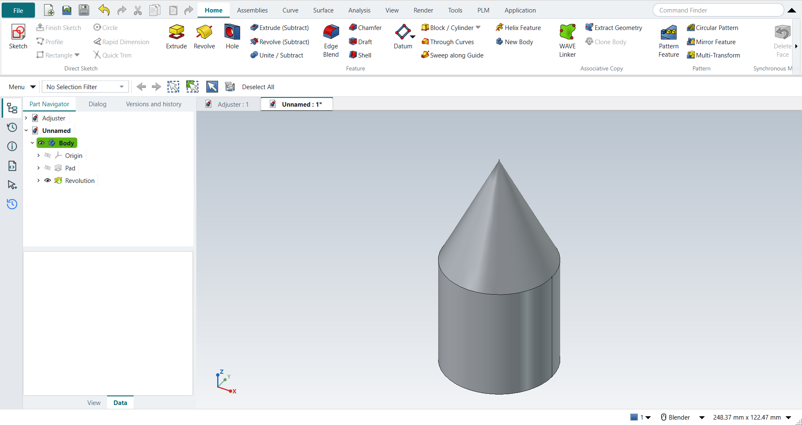

Tutorial B: First part, cylinder and cone
| Source |
A first-part exercise put together from the NX textbooks (NotebookLM credited a university course but cited Shih and Tickoo) |
| You learn |
Circle, Extrude, Revolve about a sketch axis |
| Sizes |
Hollow cylinder Ø50/Ø30 × 50 mm; cone R25 × 50 mm |

In short
-
Ctrl+N, X, XY_Plane, MB2.
-
O twice for the two circles, D for Ø50 and Ø30, Ctrl+Q, 50 mm, MB2.
-
A new part; Revolve with nothing selected; a triangle of R25 × 50 mm with Z; Ctrl+Q; revolve about the sketch’s vertical axis, MB2.
Step by step
| # | In the book (NX) | In FreeCAD NX-Style | Result | Notes |
|---|---|---|---|---|
B1 |
File > New (Ctrl+N), Model template, mm |
Ctrl+N |
same |
new document ['Unnamed'] |
B2 |
Extrude (X), pick the XC-YC plane |
X key, plane row + MB2 |
same |
picked XY-plane (Base plane) |
B3 |
Circle (O): two circles at the origin, MB2 |
O key + MB1 clicks + MB2 |
same |
tool True; 2 circles; ended True |
B4 |
Rapid Dimension: diameters 50 and 30 |
values applied |
differs |
same tool; values typed in FreeCAD’s dimension field |
B5 |
Finish Sketch, Extrude 0 to 50 mm, OK |
Ctrl+Q, 'lengthEdit' = 50, MB2 = OK |
same |
volume 62831.9 mm^3, expected 62831.9 |
B6 |
Revolve (ribbon) |
ribbon 'Home › Feature > Revolve' |
same |
nothing selected: sketch first, as with Extrude |
B7 |
Pick the YC-ZC plane |
plane row + MB2 |
same |
picked YZ-plane (Base plane) |
B8 |
Line (L): right triangle on the axis, MB2 |
L key + MB1 clicks + MB2 |
same |
tool True; 3 lines |
B9 |
Rapid Dimension: height 50, radius 25 |
values applied |
differs |
same tool |
B10 |
Finish Sketch returns to Revolve; axis = Z, 0..360 deg |
Ctrl+Q |
same |
dialog open True; default axis ['V_Axis'] (sketch V axis = Z) |
B11 |
Boolean Unite, OK |
MB2 = OK |
same |
volume 95556.8 mm^3, expected 95556.8; features in one Body unite automatically |
B12 |
Hold MB2 and drag to rotate |
MB2 drag |
same |
|
B13 |
F8 snaps to the nearest standard view |
F8 key |
same |
view Vector (0.0, 1.0, 0.0) |
B14 |
The finished part is shown in the graphics window |
render of the graphics window |
same |
11.3% of the view shows the part (an occupancy check: something is drawn; the shape itself is checked by its geometry) |
B15 |
Save (Ctrl+S) |
file name given once by script (the system file dialog is not driven); a change, then the Ctrl+S key |
same |
FirstPart.FCStd rewritten by Ctrl+S (1.1 s later), part unmodified afterwards (modified before the key: True); FreeCAD format, not .prt |
| Result | Means |
|---|---|
same |
The book’s NX steps work as written. |
differs |
It works, but the FreeCAD way is different; the notes say how. |
limit |
The book’s way fails in FreeCAD itself; a workaround follows in the next steps. |
missing |
FreeCAD has no such function; a stand-in follows. |
skipped |
Not replayed; the notes give the reason. |
FAILED |
Did not work. |